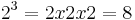
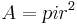

Wind energy is a form of solar energy. It is the process in which wind is captured to create electricity. Kinetic energy is converted into mechanical power through the use of wind turbines. The wind power can also be applied directly to move things such as water pumps.
Wind is caused by uneven heating of the atmosphere by the sun, variations in the Earth's surface, and rotation of the Earth. Water, vegetation, mountains, and other variations in the land have an effect on air flow patterns. Wind turbines are used to convert energy in the wind to electricity by rotating a driveshaft connected to an electric generator.
The US Department of Energy is crucial in the efforts to further the utilization of wind energy in America. According to the Department of Energy, "The mission of the Energy Department is to ensure America's security and prosperity by addressing its energy, environmental and nuclear challenges through transformative science and technology solutions." They do this through programs designed to further our technological knowledge of wind power and expand its use in the united states.
The National Wind Technology Center is the nation's top technology research center for wind power. Their goal is to reduce costs so that wind can compete with other conventional forms of electrical generation. This would provide renewable, clean energy for our nation and is the goal of the WINDExchange backed by the Department of Energy.
The WINDExchange is the initiative designed to increase the use of wind energy across the United States. The program provides information on a range of wind-related information and breakdowns of resource potential, state-by-state. This initiative is a show of the dedication the Department of Energy has to the increasing useage of wind power and clean energy in the United States.
Small changes in wind speed have an exponential impact on the amount of energy available in the wind. Energy varies with the cube of the wind speed. If the wind speed doubles there would be eight times the power available. 
Air density varies with elevation and temperature. Air is less dense at high elevations than at low elevations. Warm air is also less dense than cold air. The more dense the air, the more energy received by the turbine. Therefore, turbines will produce more power at lower elevations with colder tempuratures.
The swept area is the area through which the rotor spins. Swept area is  , where r = radius of the rotor. Small increases in the length of the blad (an increase in swept area) results in larger increases in power available to the turbine. Thus, the larger the swept area, the more power the turbine captures.